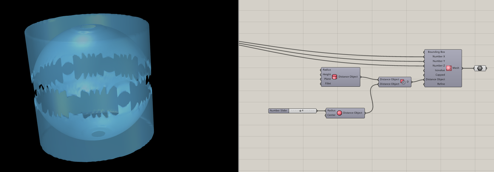
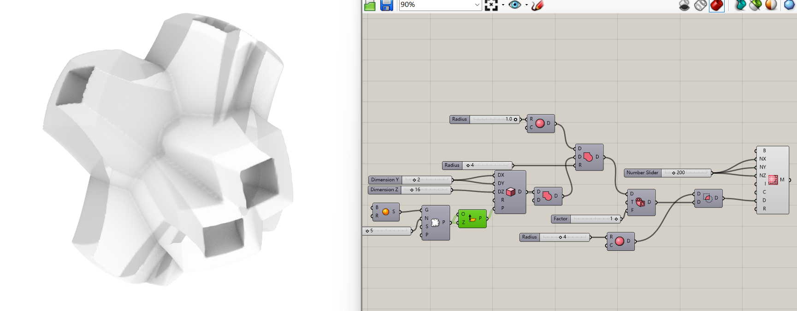
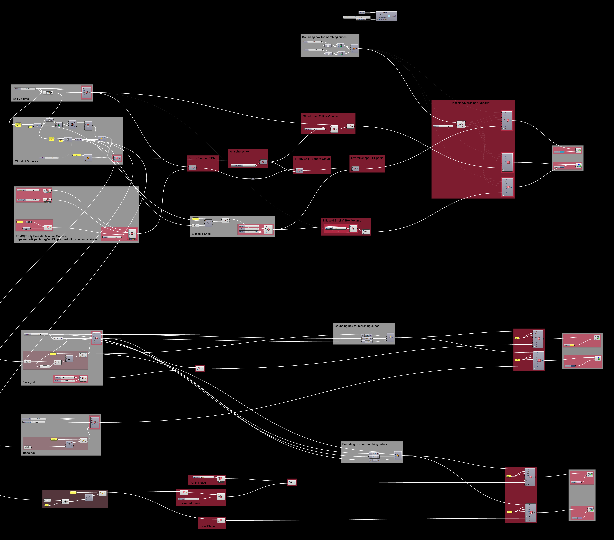

MAS dfab - Week 5 - Generative City
Content
- Axolotl Subtract
- Axolotl Addition
- Axolotl Blend
- Axolotl Practice
- An interesting note
- Processing mandelbrot set
- From processing, do mandelbrot set in Rhino
Axolotl Subtract

Axolotl Addition



Axolotl Blend

Axolotl Practice


An interesting note
import math print (math.sin(30)) #-0.988031624093 print (math.sin(-18.849556)) # Python: The outcome is -7.846124032502473e-08
A = Math.Sin(30);//-0.988032 A = Math.Sin(-18.849556); // Csharp: The outcome is -7.8461e-8
println(sin(30)); //-0.9880316 println(sin(-18.849556)); // Java: The outcome is -4.7699523E-8
Processing mandelbrot set


import peasy.*; int DIM = 32; PeasyCam cam; PrintWriter output; ArrayList<PVector> mandelbrot = new ArrayList<PVector>(); // ArrayList<PVector> outMandelbrot = new ArrayList<PVector>(); int outData[][][] = new int[DIM][DIM][DIM]; class Spheriacal{ float r, theta, phi; Spheriacal(float r, float theta, float phi) { this.r = r; this.theta = theta; this.phi = phi; } } Spheriacal spheriacal(float x, float y, float z) { float r = sqrt(x * x + y * y + z * z); float theta = atan2(sqrt(x * x + y * y), z); float phi = atan2(y,x); return new Spheriacal(r, theta, phi); } void setup() { size(600, 600, P3D); cam = new PeasyCam(this, 500); // !output // output = createWriter("C:/Users/Zac/Desktop/positions.txt"); // Ball for (int i = 0; i < DIM; i++) { for (int j = 0; j < DIM; j++) { boolean edge = false; for (int k = 0; k < DIM; k++) { float x = map(i, 0,DIM, -1,1); float y = map(j, 0,DIM, -1,1); float z = map(k, 0,DIM, -1,1); PVector zeta = new PVector(0,0,0); int interation = 0; int maxInteration = 10; int n = 8; while(true) { Spheriacal spheriacalZ = spheriacal(zeta.x,zeta.y,zeta.z); float newx = pow(spheriacalZ.r,n) * sin(spheriacalZ.theta * n) * cos(spheriacalZ.phi * n); float newy = pow(spheriacalZ.r,n) * sin(spheriacalZ.theta * n) * sin(spheriacalZ.phi * n); float newz = pow(spheriacalZ.r,n) * cos(spheriacalZ.theta * n); zeta.x = newx + x; zeta.y = newy + y; zeta.z = newz + z; interation++; if (spheriacalZ.r > 16) { if (edge)edge = false; // println (i+"x"+j+"x"+k); // outMandelbrot.add(new PVector(100 * x, 100 * y, 100 * z)); outData[i][j][k] = 0; // output.println(outData[i][j][k]); break; } if (interation > maxInteration) { //println (i+"x"+j+"x"+k); // if (!edge) // { // edge = true; // println(new PVector(100 * x, 100 * y, 100 * z)); // } // stroke(255, 255, 255); mandelbrot.add(new PVector(100 * x, 100 * y, 100 * z)); outData[i][j][k] = 1; // output.println(outData[i][j][k]); break; } } } } } // println(t); // println ( DIM*DIM*DIM); // println (mandelbrot.size()+outMandelbrot.size()); } void draw() { background(0); stroke(255, 255,255); for (PVector v : mandelbrot) { point(v.x, v.y, v.z); } } // void keyPressed() { // output.flush(); // Writes the remaining data to the file // output.close(); // Finishes the file // exit(); // Stops the program // }
From processing, do mandelbrot set in Rhino

import mola import math from mola import module_rhino from ghpythonlib import treehelpers dim = int(math.floor(len(Values) ** (1 / 3) + 0.0001)) # ! Too tree facesArray = [] lineArray = [] for i in range(dim): facesArray.append(Values[dim*dim * i : dim*dim * (i + 1)]) for face in facesArray: tempArray = [] for i in range(dim): tempArray.append(face[dim * i : dim * (i + 1)]) lineArray.append(tempArray) # ! End to tree for i in range(dim): for j in range(dim): for k in range(dim): lineArray[0][j][k]=0 lineArray[-1][j][k] =0 lineArray[i][0][k]=0 lineArray[i][-1][k] =0 lineArray[i][j][0]=0 lineArray[i][j][-1] =0 # ! Too list values = [] for i in range(dim): for j in range(dim): for k in range(dim): values.append(lineArray[i][j][k] ) # x = treehelpers.list_to_tree(lineArray) # print (len(values)) cubes = mola.mesh_marching_cubes(dim, dim, dim, values, 0.5) cubes.update_topology() mola.color_faces_by_vertical_angle(cubes.faces) outTemp = module_rhino.display_mesh(cubes)